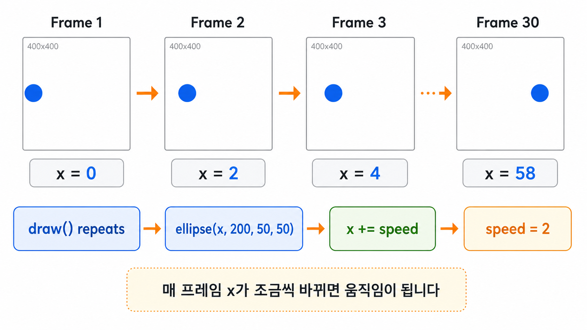
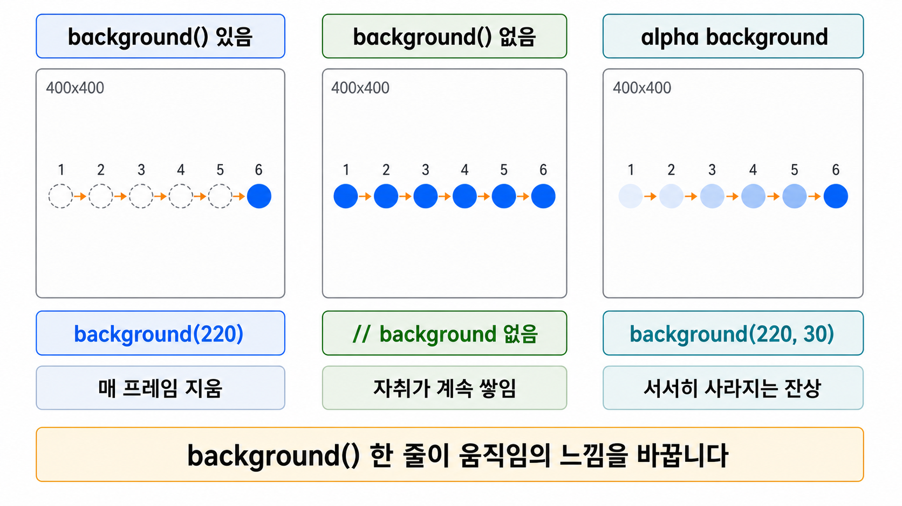
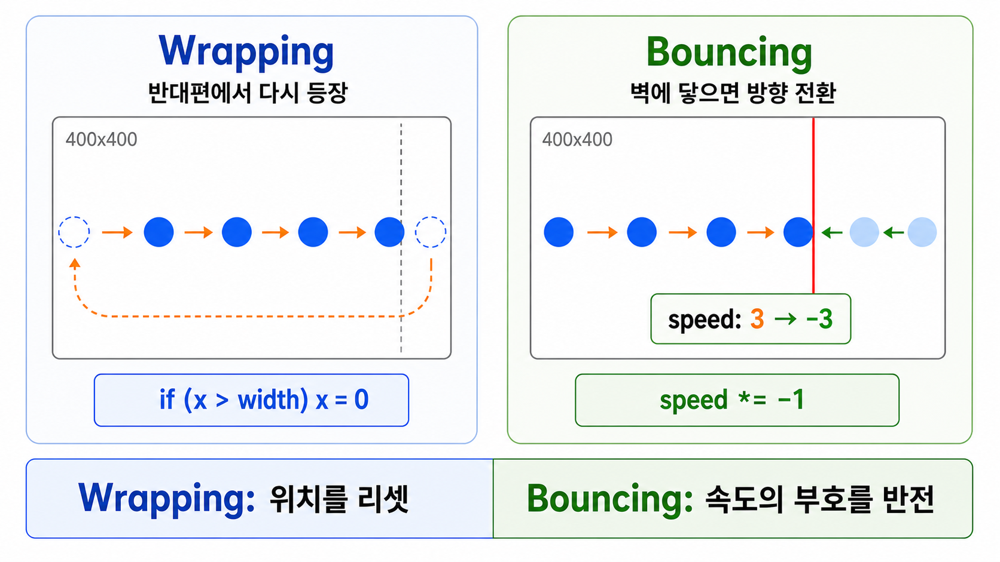

5주차 1교시 — 애니메이션 원리와 변수로 움직이기
강의 아웃라인: week-05-outline 다음 교시: week-05-period2-student (random, 유틸리티 함수, 좌표 변환)
| 항목 | 내용 |
|---|---|
| 대상 | P5.js 입문자 (테크아트 전공) |
| 소요 시간 | 50분 (45분 + 버퍼 5분) |
| 핵심 도구 | P5.js Web Editor |
-
frameCount와frameRate()로 P5.js 애니메이션의 원리를 설명할 수 있습니다 - 변수를 매 프레임 갱신하여 도형의 움직임을 구현할 수 있습니다
-
background()유무에 따른 이동/잔상 효과 차이를 이해합니다 - 화면 경계 처리(래핑, 바운싱)를 구현할 수 있습니다
- 4주차에서 배운 인터랙션과 움직임을 결합할 수 있습니다
도입
4주차 연결
4주차에서 마우스 클릭, 키보드 입력에 반응하는 스케치를 만들었습니다. 그런데 그 도형들은 가만히 있다가 입력이 들어올 때만 변했습니다.
사용자가 아무것도 안 해도 스스로 움직이는 스케치를 만들고 싶다면? 화면 위를 떠다니는 원, 벽에 부딪혀 튕기는 공, 끊임없이 흘러가는 파티클 — 오늘은 이것을 만듭니다.
움직이는 미디어아트 사례
사례 1: Casey Reas — “Process Compendium”
(2004~2010) Processing(P5.js의 바탕이 된 창작 코딩 환경)을
공동 제작한 작가입니다. 수천 개의 작은 원과 선이 각자
규칙에 따라 끊임없이 움직이면서, 시간이 지나면 예상하지 못한 복잡한
패턴이 나타납니다. 코드로 생각하면 x += speed; — 오늘 배울
바로 그 한 줄이 이 작품의 핵심입니다. 링크: Casey Reas — Process
사례 2: d’strict — “WAVE” (2020, 서울 삼성동 코엑스)
삼성동 코엑스 건물의 80미터짜리 LED 스크린에 거대한
파도가 치는 작품입니다. 평면 스크린인데 마치 유리 상자 안에
실제 바다가 있는 것처럼 보입니다. sin() 함수로 물결을
만들고 frameCount로 시간에 따라 움직이게 하는 원리로 볼 수
있습니다. 2교시에서 배울 내용의 확장판입니다. 링크: d’strict
— WAVE
사례 3: Zach Lieberman — “Daily Sketches” (2016~현재) 2016년 1월 1일부터 매일 하나씩 코드로 짧은 애니메이션을 만들어 올리는 작가입니다. 글자가 녹아내리고, 선이 춤추고, 점들이 군무하는 짧은 움직임 실험들 — 하나하나가 작은 P5.js 프로젝트처럼 보일 정도입니다. 링크: Zach Lieberman — Daily Sketches (Medium)
사례 4: 스크린세이버의 바운싱 로고 DVD 로고가 화면을 떠다니다가 벽에 부딪히면 튕기는 것 — 단순하지만 중독적인 움직임입니다. 이것이 오늘 직접 만들 바운싱 볼의 원조입니다.
이 작품들의 공통점은 모두 변수를 매 프레임 바꾸는 것
— x += speed 이 한 줄에서 시작한다는 점입니다.
핵심 개념 1 — draw()는 이미 반복하고 있다
1주차에서 setup()은 한 번, draw()는 반복
실행된다고 배웠습니다. 몇 번 반복되는지
확인해봅니다.
frameCount —
draw()가 몇 번 실행됐는지
function setup() {
createCanvas(400, 400);
textSize(32);
}
function draw() {
background(220);
text(frameCount, 20, 50);
}frameCount는 draw()가 지금까지 몇
번 실행됐는지 세는 카운터입니다. 숫자가 빠르게 올라갑니다 —
draw()가 초당 60번 실행되고 있다는
뜻입니다. 영화가 보통 초당 24프레임이라면, P5.js는 기본적으로 초당
60프레임을 목표로 실행됩니다.
frameRate() — 초당
프레임 수 설정
function setup() {
createCanvas(400, 400);
frameRate(1); // 초당 1번만 실행
textSize(32);
}
function draw() {
background(220);
text(frameCount, 20, 50);
}frameRate(1) — 초당 1번만 draw()를
실행합니다. frameRate(10) → 초당 10번,
frameRate(60) → 초당 60번(기본값).
draw()가 초당 60번 반복 실행되니까, draw()
안에서 변수 값을 조금씩 바꾸면 그게 움직임이 됩니다.
영화 필름처럼 조금씩 다른 그림을 빠르게 보여주면 움직이는 것처럼
보입니다.

frameCount가 120일 때, draw()는 몇 초 동안
실행된 걸까요? (기본 frameRate 기준)
답: 2초입니다. 초당 60번이니까 120번이면 2초.
핵심 개념 2 — 변수를 활용한 움직임
2주차에서 let x = 200;으로 변수를 만들었습니다. 그
변수를 매 프레임 바꾸는 것이 움직임의 핵심입니다.
기본 패턴: 변수 선언 → draw()에서 갱신 → 도형에 적용
let x = 0;
function setup() {
createCanvas(400, 400);
}
function draw() {
background(220);
ellipse(x, 200, 50, 50);
x = x + 2; // 매 프레임 오른쪽으로 2px
}핵심은 세 줄입니다. let x = 0;으로 위치 변수를 만들고,
ellipse(x, 200, ...)에서 그 변수를 위치로 사용한 다음,
x = x + 2로 매 프레임 값을 증가시킵니다. 이 세 줄이
애니메이션의 기본 공식입니다.
코드 실행 추적 (처음 3프레임):
프레임 1: x = 0 → ellipse(0, 200, 50, 50) → x = 0 + 2 = 2
프레임 2: x = 2 → ellipse(2, 200, 50, 50) → x = 2 + 2 = 4
프레임 3: x = 4 → ellipse(4, 200, 50, 50) → x = 4 + 2 = 6속도 조절
x = x + 2에서 2가
속도입니다.
| 코드 | 효과 |
|---|---|
x = x + 2 (또는 x += 2) |
오른쪽으로 느리게 |
x += 5 |
오른쪽으로 빠르게 |
x += -3 (또는 x -= 3) |
왼쪽으로 |
y += 1 |
아래로 이동 |
x += 2; y += 1; |
대각선 이동 |
속도를 변수로 분리
let x = 0;
let speed = 3;
function setup() {
createCanvas(400, 400);
}
function draw() {
background(220);
ellipse(x, 200, 50, 50);
x += speed;
}speed라는 이름을 붙이면 코드가 읽기 좋아집니다. 나중에
speed 값만 바꾸면 속도도 조절할 수 있습니다.
움직임 변수는 반드시 draw() 밖에
선언해야 합니다. draw() 안에서 선언하면 매 프레임 0으로
초기화되어 계속 제자리에 머뭅니다 (2주차 변수 스코프).
// draw() 안에 선언하면 매 프레임 0으로 초기화
function draw() {
background(220);
let x = 0; // 매번 0으로 초기화!
ellipse(x, 200, 50, 50);
x += 2;
}핵심 개념 3 — background() 유무에 따른 효과 차이
draw() 안의 background(220)을 빼면 어떻게
될까요?
let x = 0;
function setup() {
createCanvas(400, 400);
background(220); // setup()에서 한 번만 배경 칠하기
}
function draw() {
// background() 없음!
ellipse(x, 200, 50, 50);
x += 2;
}원이 지나간 자리가 그대로 남아 긴 궤적이 생깁니다.
매 프레임 배경을 새로 칠하면 이전 프레임이 지워져서
깔끔하게 이동합니다. 반대로 배경을 다시 칠하지 않으면 이전 프레임이
남아서 궤적이 됩니다. 3주차에서 배운 반투명
background(220, 30)을 쓰면 서서히 사라지는 꼬리 효과도 만들
수 있습니다. 지우느냐 남기느냐, 이 한 줄 차이로 완전히
다른 느낌이 됩니다.

핵심 개념 4 — 화면 경계 처리
x가 계속 증가하면 width(400)를 넘어 화면 밖으로
사라집니다. 두 가지 해결 방법이 있습니다.
방법 1: 래핑(Wrapping)
오른쪽으로 나가면 왼쪽에서 다시 등장합니다. 반대편으로 이어지는 방식입니다.
let x = 0;
function setup() {
createCanvas(400, 400);
}
function draw() {
background(220);
ellipse(x, 200, 50, 50);
x += 3;
// 래핑: 오른쪽으로 나가면 왼쪽에서 다시 등장
if (x > width) {
x = 0;
}
}4주차에서 배운 if문입니다. x > width면
x를 0으로 되돌립니다. 양방향으로 처리하려면:
if (x > width) {
x = 0;
} else if (x < 0) {
x = width;
}방법 2: 바운싱(Bouncing)
벽에 부딪히면 반대 방향으로 튕깁니다. 핵심 아이디어는 속도의 부호를 뒤집기.
let x = 200;
let speed = 3;
function setup() {
createCanvas(400, 400);
}
function draw() {
background(220);
ellipse(x, 200, 50, 50);
x += speed;
if (x > width || x < 0) {
speed *= -1; // 방향 전환!
}
}speed *= -1 — 속도에 -1을 곱하면 부호가
반전됩니다. 3이면 -3, 다시 벽에 닿으면
3. 계속 왕복합니다.
y축 바운싱 추가 → 2D 바운싱 볼:
let x = 200, y = 200;
let speedX = 3, speedY = 2;
function setup() {
createCanvas(400, 400);
}
function draw() {
background(220);
ellipse(x, y, 50, 50);
// 위치 갱신
x += speedX;
y += speedY;
// x축 바운싱
if (x > width || x < 0) {
speedX *= -1;
}
// y축 바운싱
if (y > height || y < 0) {
speedY *= -1;
}
}speedX와 speedY를 따로 만들어 각각
독립적으로 방향을 전환합니다. DVD 스크린세이버와 동일한
움직임입니다.

speedX = 3, speedY = 3으로 하면 어떻게 움직일까요?
speedX = 5, speedY = 1이면?
답: 3, 3이면 정확히 대각선 45도로 움직입니다. 5, 1이면 x방향은 빠르고 y방향은 느려서 거의 수평에 가깝게 움직입니다.
핵심 개념 5 — 움직임 + 인터랙션 결합
4주차의 마우스 클릭·키보드 입력을 오늘 배운 움직임과 합치면 사용자가 제어할 수 있는 애니메이션이 됩니다.
마우스 클릭으로 방향 바꾸기
let x = 200, y = 200;
let speedX = 3, speedY = 2;
function setup() {
createCanvas(400, 400);
}
function draw() {
background(220);
// 공 색상: 오른쪽으로 가면 빨강, 왼쪽으로 가면 파랑
if (speedX > 0) {
fill(255, 100, 100);
} else {
fill(100, 100, 255);
}
ellipse(x, y, 50, 50);
x += speedX;
y += speedY;
if (x > width || x < 0) {
speedX *= -1;
}
if (y > height || y < 0) {
speedY *= -1;
}
}
function mousePressed() {
speedX *= -1; // 클릭하면 x방향 반전!
}4주차의 mousePressed() + 오늘의 바운싱 볼 =
인터랙티브 애니메이션. 자동으로 움직이고, 사용자
입력으로 방향을 바꿀 수 있습니다. speedX > 0이면 빨강,
아니면 파랑 — 4주차 조건문도 자연스럽게 쓰입니다.
키보드로 속도 조절
let x = 200;
let speed = 3;
function setup() {
createCanvas(400, 400);
}
function draw() {
background(220);
// 속도에 비례하는 크기
let size = abs(speed) * 10;
ellipse(x, 200, size, size);
x += speed;
if (x > width || x < 0) {
speed *= -1;
}
}
function keyPressed() {
if (key === 'f') {
speed *= 1.5; // 빨라지기
} else if (key === 's') {
speed *= 0.5; // 느려지기
} else if (key === 'r') {
x = width / 2; // 중앙으로 초기화
speed = 3;
}
}abs()는 음수의 마이너스를 떼는 함수입니다.
abs(-3)은 3, abs(3)도
3. 바운싱에서 speed가 양수/음수로 왔다 갔다 하므로, 크기
계산에는 항상 양수가 필요해 abs(speed)를 씁니다.
예제
예제 1 — 멀티 바운싱 볼
let x1 = 100, y1 = 100;
let x2 = 300, y2 = 200;
let x3 = 200, y3 = 300;
let sx1 = 4, sy1 = 2;
let sx2 = -3, sy2 = 3;
let sx3 = 2, sy3 = -4;
function setup() {
createCanvas(400, 400);
noStroke();
}
function draw() {
background(30);
// 공 1: 빨강
fill(255, 80, 80);
ellipse(x1, y1, 40, 40);
x1 += sx1; y1 += sy1;
if (x1 > width || x1 < 0) sx1 *= -1;
if (y1 > height || y1 < 0) sy1 *= -1;
// 공 2: 초록
fill(80, 255, 80);
ellipse(x2, y2, 40, 40);
x2 += sx2; y2 += sy2;
if (x2 > width || x2 < 0) sx2 *= -1;
if (y2 > height || y2 < 0) sy2 *= -1;
// 공 3: 파랑
fill(80, 80, 255);
ellipse(x3, y3, 40, 40);
x3 += sx3; y3 += sy3;
if (x3 > width || x3 < 0) sx3 *= -1;
if (y3 > height || y3 < 0) sy3 *= -1;
}같은 패턴에서 변수만 바꾸어 공 3개를 만든 예제입니다. 코드를 보면 공 1, 2, 3의 구조가 완전히 같고 변수 이름만 다릅니다. 6주차에서 배열을 배우면 이 구조를 10개, 100개로 확장할 수 있습니다.
예제 2 — 궤적 + 바운싱 + 마우스 인터랙션
let x = 200, y = 200;
let speedX = 4, speedY = 3;
function setup() {
createCanvas(400, 400);
background(20);
noStroke();
}
function draw() {
// 반투명 배경으로 은은한 잔상
background(20, 20, 20, 15);
// frameCount로 색상 변화
fill(frameCount % 255, 100, 200, 180);
ellipse(x, y, 30, 30);
x += speedX;
y += speedY;
if (x > width || x < 0) speedX *= -1;
if (y > height || y < 0) speedY *= -1;
}
function mousePressed() {
// 클릭하면 마우스 위치에서 재시작 + 랜덤 방향
x = mouseX;
y = mouseY;
speedX = random(-5, 5);
speedY = random(-5, 5);
}오늘 배운 핵심이 모두 들어 있습니다 — 바운싱, 잔상 효과,
frameCount로 색상 변화, 마우스 클릭으로 위치 초기화.
(random()은 2교시에서 배웁니다. 지금은 -5에서
5 사이의 랜덤 숫자로 이해하면 됩니다.)
정리
| 개념 | 핵심 | 코드 |
|---|---|---|
| 애니메이션 원리 | draw() 반복 + 변수 갱신 = 움직임 |
x += speed; |
| 프레임 관련 | frameCount = 실행 횟수, frameRate() = 속도
설정 |
frameRate(30); |
| 경계 처리 | 래핑 = 반대편 등장, 바운싱 = 방향 전환 | speed *= -1; |
background()가 있으면 깔끔하게 이동하고, 없으면 궤적과
잔상이 남습니다. 그리고 4주차 인터랙션 + 5주차 움직임 =
인터랙티브 애니메이션입니다.
2교시 예고
지금까지는 일정한 속도로만 움직였습니다. 2교시에서는
random()으로 예측 불가능한 움직임을
만들고, map()·constrain() 유틸리티 함수,
좌표를 회전시키는 translate()·rotate()까지
배웁니다.